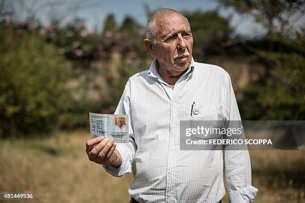

Our Story
Reserve Animaliere de la Manika is a wildlife and conservation-focused organisation dedicated to
promoting appreciation and protection of nature.
The reserve aims to provide visitors with oportunities to learn about wildlife while enjoying natural
surroundings.
CEO'S Story

Willem Boulanger, an 83-year-old from Mons living in Congo, dreams of opening a wildlife reserve near
Kolwezi (Photos)
"I was 9 or 10 years old and I was already saying I would live in Congo." This childhood dream of a man
from Mons, Willem Boulanger, has largely come true. At nearly 83, he is nurturing another one: a
wildlife reserve near Kolwezi, in the southeast of the Democratic Republic of Congo (DRC).
A former parachute second lieutenant, the young Boulanger was employed by the Union Minière to "ensure
security": he recounts having mined bridges and taken part in fighting within the Katangese army against
UN peacekeepers ("Blue Helmets"), all while continuing his Sunday outings into the bush.
In 1963, the rebel province was reattached to Congo. Government soldiers "arrived like conquerors,"
multiplying roadblocks and extortion, Boulanger recalls.
Since he still intended to relax on weekends, he founded a water-sports base on a lake near Kolwezi that
could be reached without too much hassle. The influx of well-off people who could take up water-skiing
benefited local development. In gratitude, Boulanger was made an honorary "mwami" (traditional chief).
"Congo has been a blessed land for me," Boulanger acknowledges — one of the few Belgians to have stayed
in Kolwezi, where he says he is "one of the last old dinosaurs."
Parked in front of his house is an old Land Rover, which he drove across the country from west to east
in 1985. The 4x4 bears a "Réserve de la Manika" logo — the wildlife park project so close to this young
octogenarian's heart.
The white "mwami" has obtained a renewable 25-year lease on 16,000 hectares of grassy savanna, where he
plans to reintroduce around twenty mammal species (zebras, warthogs, wildebeest, giraffes, leopards,
cheetahs...) that once populated the plateau.
The visitor reception building, a few kilometres from Kolwezi airport, was completed in 2010, but the
work isn't finished.
Our Mission
Our mission is to promote wildlife conservatin, protect natural habitats and educate visitors and
communities about importance of biodiversity.
Our vision
Our vision is to become a recognised wildlife and conservation destination that encourages responsible
tourism and environmental education.